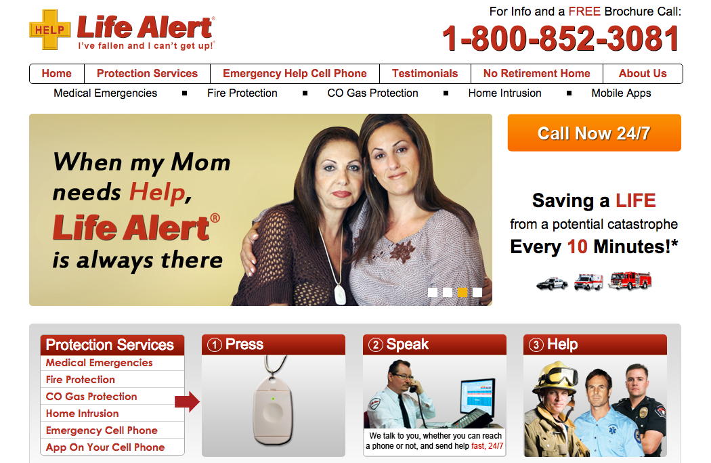
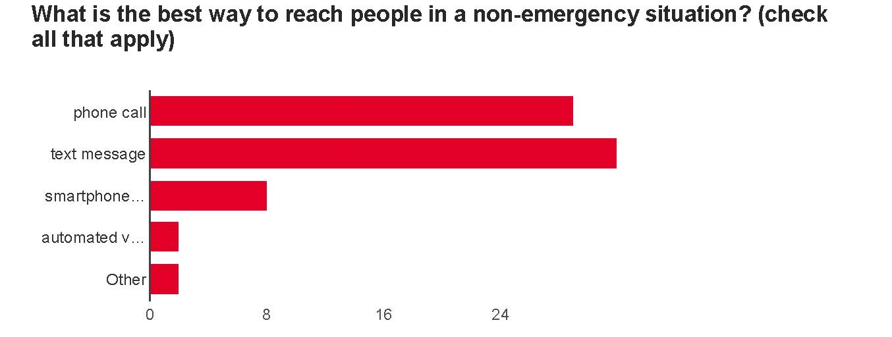
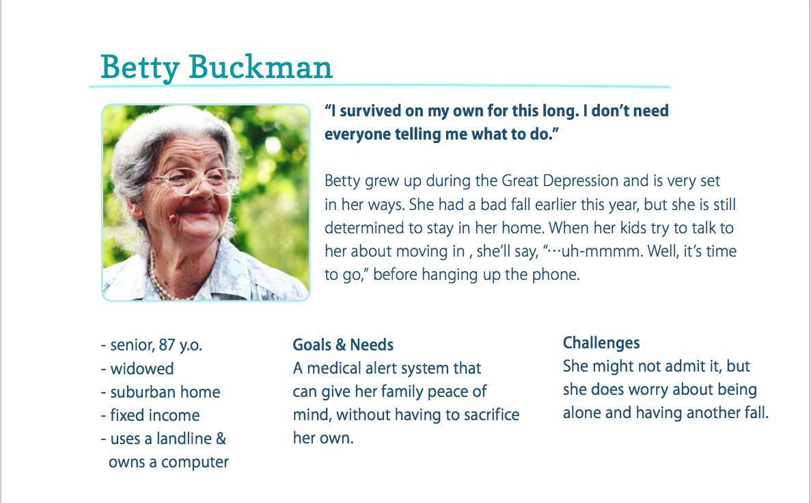
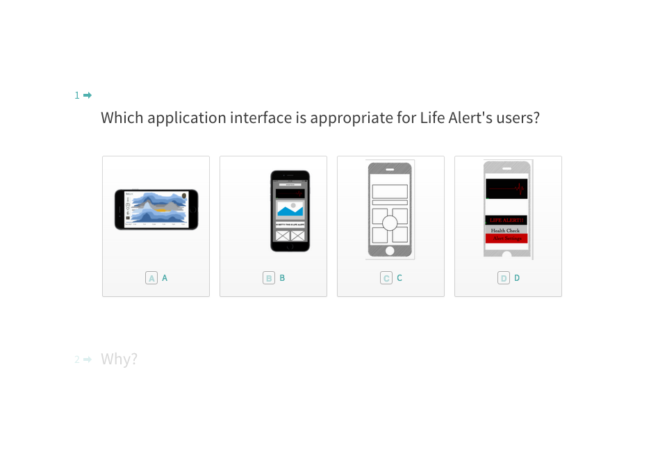

USER RESEARCH
Seniors and their caregivers were the main demographic for survyes and interviews. Questions ranged from their beliefs about healthcare, fitness, and preferences for a mobile app design.
A Case Study The Challenge: To modernize Life Alert and regain its target marketshare or the next generation of users.
Seniors and their caregivers were the main demographic for survyes and interviews. Questions ranged from their beliefs about healthcare, fitness, and preferences for a mobile app design. Most customers are senior citizens. Therefore, great care went into developing the primary persona. Betty, the primary persona, reflects the ideaology, pragmatisim, and frugality of a 82 year-old woman born during the Great Depression. The redesign included several additional processes. . . Features are prioritized by whether it's essential to the apps ability to function and the cost of integrating the feature in the app. Ideas were jotted down on Post-Its. Notes with similar themes were grouped together. User's had negative experiences with Life Alert after an initial incident resulting in emergency services. The solution: introduce Life Alert before the initial incident, before an ER visit. Life Alert would be preventative and encourage teens, adults, and seniors to maintain their health. By providing metrics for fitness, health, and emergency services, Life Alert's new user experience is a positive one.
THE CHALLENGE

USER RESEARCH

Creating Personas

THE "RE-DESIGN" PROCESS

Mapping the Features
An Affinity Map

User Journey Map 1
User Journey Map 2